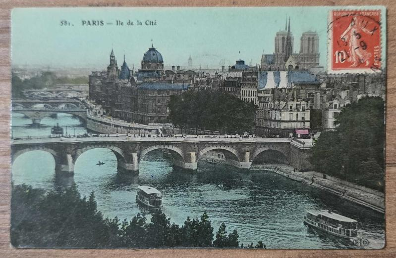

Paris'te Modernleşme İzlenimleri
1919 yılında Paris'e gelen Mustafa Kemal, şehrin modern yapısını, eğitim kurumlarını ve sosyal yaşamını yakından inceleme fırsatı buldu...
Devamını OkuModern Türkiye'nin kurucusunun Avrupa şehirlerindeki deneyimleri ve gözlemleri
Askeri Ataşe olarak görev yaptığı dönem
Alman ordusunda incelemeler
Kültür ve sanat incelemeleri
Sağlık tedavisi
Modernleşme gözlemleri
1919 yılında Paris'e gelen Mustafa Kemal, şehrin modern yapısını, eğitim kurumlarını ve sosyal yaşamını yakından inceleme fırsatı buldu...
Devamını OkuAskeri ataşe olarak görev yaptığı Sofya'da diplomatik deneyimler kazanan Mustafa Kemal, Balkanlar'daki siyasi gelişmeleri yakından takip etti...
Devamını Oku